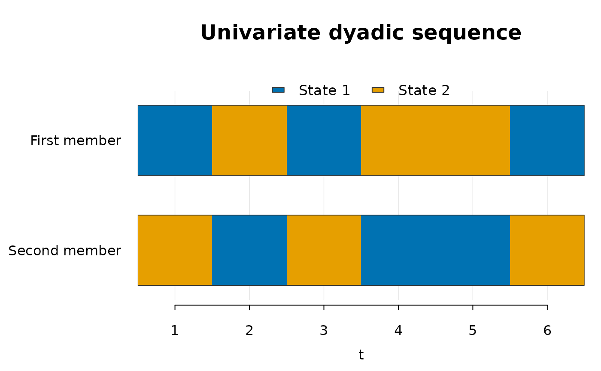
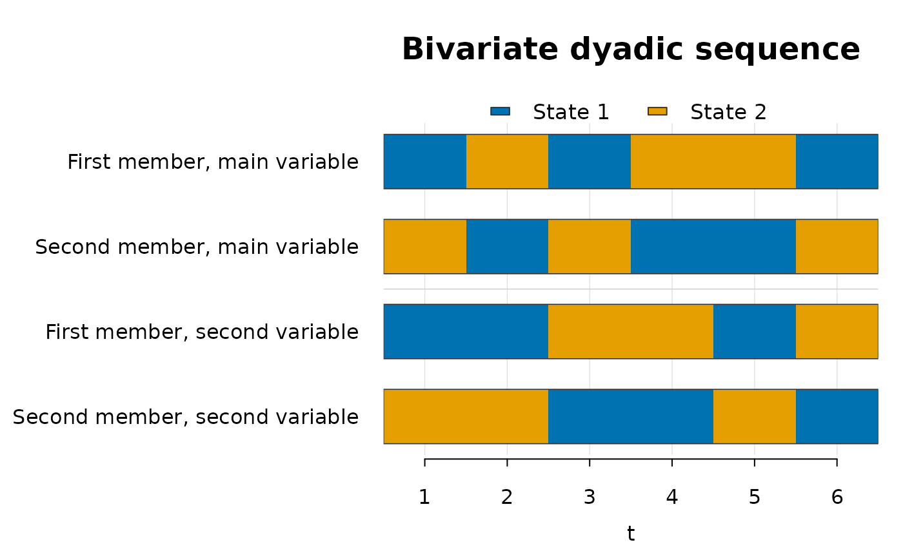

Displays each categorical sequence retained by a dyadicMarkov result as a horizontal state strip. A strip consists of adjacent coloured intervals: each interval represents one measurement occasion, and its colour identifies the observed state. Consecutive occasions in the same state therefore form a continuous run. Vertical position identifies the member and, for bivariate results, the variable.
Arguments
- x
A
dyadic_patternordyadic_caseobject.- col
Character vector containing exactly one distinct, non-fully-transparent colour per state, or
NULLfor an accessible default palette. Colours identify states consistently across every strip.- main
Optional main title. If
NULL, a title appropriate to the univariate or bivariate sequence is used.- cex
Optional positive text scaling factor. If
NULL, the default is1.- ...
Additional arguments are not currently supported.
Details
Univariate results contain two strips, one for each member, and support any
integer \(\mathrm{states} \ge 2\). Bivariate results contain four strips for
the two members on the main and second variables; the currently developed bivariate
method supports states = 2 only. The plot displays observed sequences, not
fitted probabilities or inferred dependency structures. Statistical
identification results remain available through print() and summary().
References
Tueller, S. J., Van Dorn, R. A., and Bobashev, G. V. (2016). Visualization of categorical longitudinal and time series data. Methods Report RTI Press, 2016. doi:10.3768/rtipress.2016.mr.0033.1602 .
Examples
chainFM <- c(1L, 2L, 1L, 2L, 2L, 1L)
chainSM <- c(2L, 1L, 2L, 1L, 1L, 2L)
univariate <- univariatePattern(
chainFM,
chainSM,
states = 2L
)
plot(univariate)

chainFM_V2 <- c(1L, 1L, 2L, 2L, 1L, 2L)
chainSM_V2 <- c(2L, 2L, 1L, 1L, 2L, 1L)
empirical <- countEmpBivariate(
chainFM,
chainSM,
chainFM_V2,
chainSM_V2,
states = 2L
)
bivariate <- bivariateCase(empirical)
plot(bivariate)
